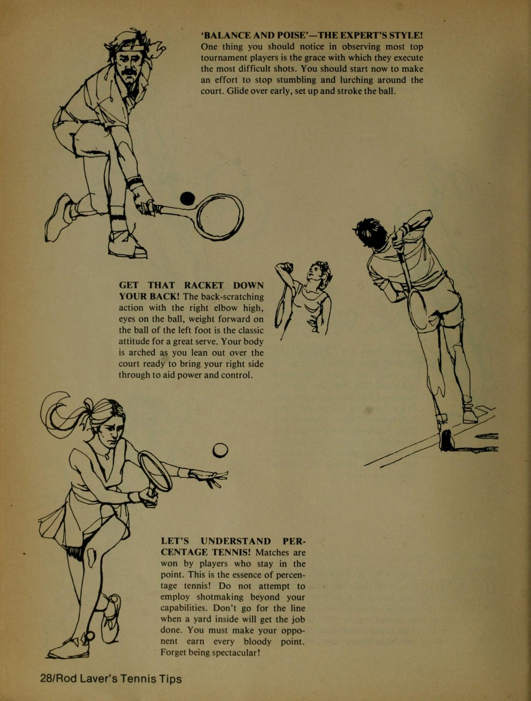
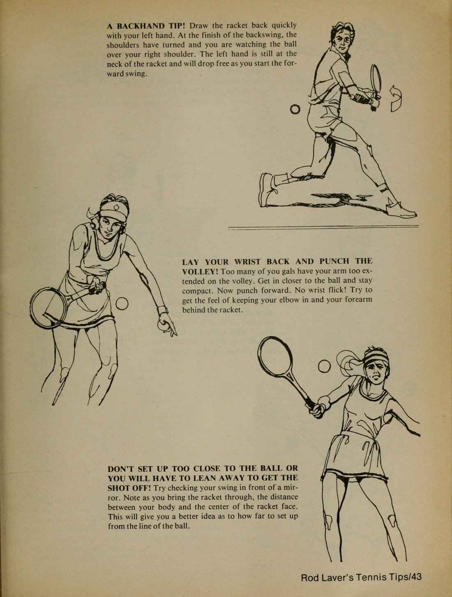
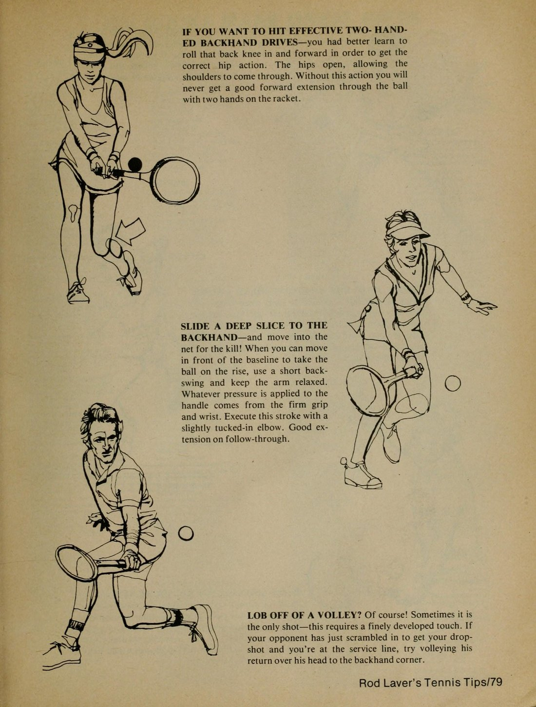
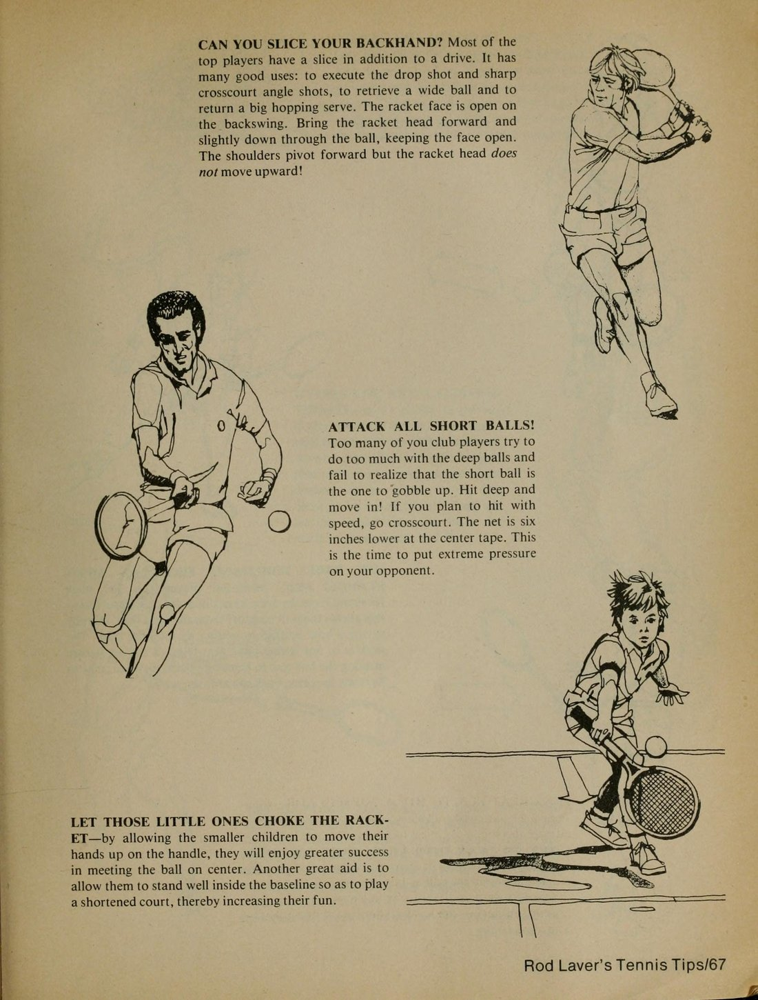
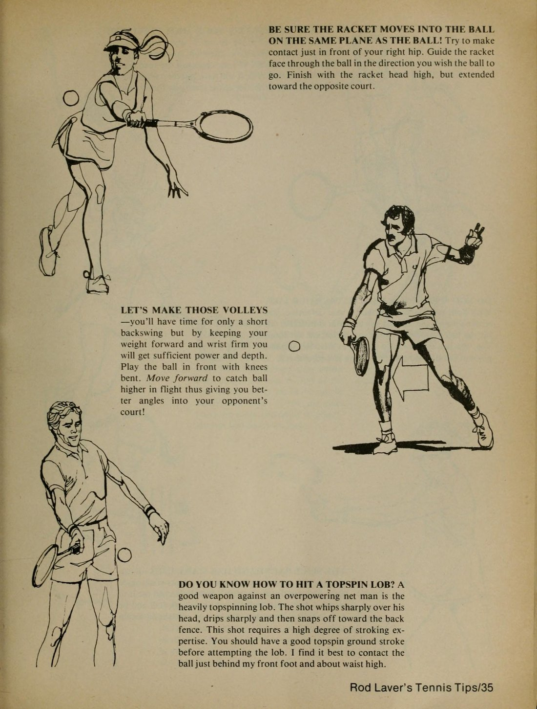
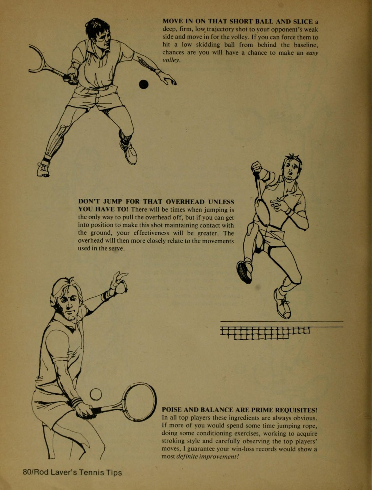
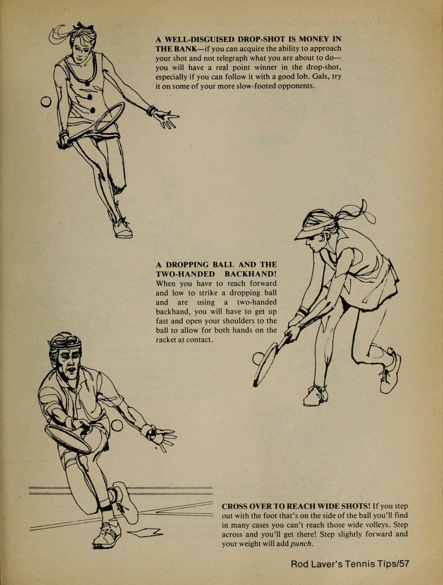

Phần I: Bộ Chân, Khóa Cổ Tay & Nền Tảng Cú Thuận Tay Vững Chắc
Những lời khuyên cốt tử từ huyền thoại hai lần giành trọn Calendar Grand Slam Rod Laver: Bí quyết khóa chặt cổ tay, bước chân đè trọng lượng và xử lý bóng thuận tay khi đang bứt tốc
1. Khóa Chặt Cổ Tay: Nền Tảng Cốt Tử Của Kiểm Soát Bóng
Hãy nắm cán vợt thật chắc chắn; nếu bạn thả lỏng tay cầm một cách lười biếng, bạn sẽ hoàn toàn đánh mất quyền kiểm soát trái bóng.
Khi một đường bóng uy lực của đối phương bay đến và va chạm vào mặt lưới, cây vợt sẽ bị vặn xoắn và quả bóng sẽ nảy ra ngoài một cách mất kiểm soát nếu lực nắm tay của bạn lỏng lẻo.
Ngoại trừ cú phát bóng và cú đập bóng trên đầu (Overhead smash) đòi hỏi sự bẻ cổ tay linh hoạt để tăng tốc đầu vợt, trong mọi cú đánh chạm đất (Groundstroke), cổ tay của bạn bắt buộc phải được khóa cứng tuyệt đối.
Một khi cây vợt đã bắt đầu chuyển động tiến về phía trước để tiếp xúc bóng, khớp cổ tay phải vững như bàn thạch.
Rất nhiều người chơi phong trào có thói quen vẩy cổ tay vào thời điểm va chạm với hy vọng tạo thêm độ xoáy; đó là một thói quen tai hại dẫn tới sự thất thường kinh niên và những cơn đau nhức cổ tay dai dẳng.
Hãy để chuyển động của bả vai và sự xoay chuyển của toàn bộ thân trên thực hiện nhiệm vụ truyền lực, chứ không phải khớp cổ tay mong manh của bạn.
2. Đừng Bao Giờ Đứng Chết Chân: Bí Quyết Bộ Chân Linh Hoạt
Có thể bộ chân chính là vấn đề lớn nhất đang kìm hãm trình độ của bạn mà bạn không hề hay biết.
Trong quần vợt, phản xạ với một quả bóng đang bay đòi hỏi bạn phải có đôi chân cực kỳ linh hoạt và nhanh nhẹn.
Những tay vợt hàng đầu không bao giờ đứng bệt cả bàn chân xuống mặt sân (Flat-footed); họ luôn nhún nhảy trên các đầu ngón chân như một võ sĩ quyền anh đang di chuyển trên sàn đấu.
Ngay khi đối phương vung vợt đánh bóng, bạn phải thực hiện bước nhún tách chân và sẵn sàng bứt tốc.
Đừng bao giờ đứng yên một chỗ chờ đợi quả bóng bay đến với mình; hãy chủ động di chuyển đón đầu quả bóng.
Việc tiến về phía trước không chỉ giúp bạn dồn toàn bộ trọng lượng cơ thể vào cú đánh để gia tăng lực sát thương, mà còn ngăn không cho quả bóng rơi quá thấp xuống dưới tầm thắt lưng, đồng thời tạo ra một áp lực tâm lý đè nặng lên đối thủ ở phần sân bên kia.

3. Đòn Thuận Tay Khi Đang Chạy: Thu Ngắn Mở Vợt & Hạ Thấp Vai
Thực hiện một cú thuận tay khi đang đứng yên là điều ai cũng có thể làm được; nhưng thực hiện một cú thuận tay mẫu mực khi đang phải chạy hết tốc lực sang hai góc sân lại là một câu chuyện hoàn toàn khác.
Khi bạn bị đối phương ép chạy dạt ra biên, quy tắc sống còn là phải thu ngắn biên độ mở vợt ra sau (Short backswing).
Nếu bạn vẫn cố vung vợt ra sau thật rộng như khi đứng thong thả ở giữa sân, bạn chắc chắn sẽ tiếp xúc bóng trễ phía sau hông và đánh bóng rúc lưới hoặc văng ra ngoài hàng mét.
Hãy hạ thấp vai trước của bạn hướng về phía quả bóng, giữ đầu cố định và giữ trọng tâm cơ thể thật thăng bằng.
Thay vì cố gắng tung ra một cú giật bóng ăn điểm không tưởng, hãy tập trung vào việc đánh một đường bóng sâu, an toàn qua lưới với độ cao cách mép lưới ít nhất nửa mét để kịp thời hồi phục vị trí về trung tâm sân đấu.
Phần II: Giải Mã Cú Trái Tay, Đòn Cắt Xoáy & Trái Tay Hai Tay
Kỹ thuật định vị vai dẫn hướng, tối ưu hóa điểm tiếp xúc phía trước, cơ chế phát lực của cú trái hai tay và nghệ thuật cắt bóng phòng thủ phản công
4. Vai Dẫn Hướng: Chỉ Thẳng Vào Quả Bóng
Đây là bí quyết đơn giản nhưng mang lại hiệu quả kỳ diệu nhất cho cú trái tay một tay của bạn:
Khi quả bóng của đối phương tiếp cận đến cách khu vực chạm bóng khoảng hai mét, hãy xoay thân người và hướng vai trước (vai phải của người thuận tay phải) chỉ thẳng vào quả bóng đang bay tới.
Hành động này tự động đưa cơ thể bạn vào tư thế nghiêng hoàn hảo, khóa hông và tạo điều kiện cho lưng hơi xoay về phía lưới để tích lũy thế năng xoắn.
Hầu hết các cú đánh trái tay hỏng đều xuất phát từ việc người chơi mở ngực quá sớm về phía lưới trước khi tiếp xúc bóng.
Khi ngực bạn mở sớm, mặt vợt sẽ bị giật chéo sang một bên và điểm tiếp xúc bóng bị kéo lùi về phía sau thân người.
Hãy giữ vai trước hướng vào bóng cho đến khi bạn vung vợt xuyên qua điểm tiếp xúc ở phía trước mũi chân trước; chỉ khi bóng đã rời mặt lưới, cơ thể mới tự nhiên xoay mở theo đà vung vợt.

5. Cú Trái Tay Hai Tay: Giữ Hai Tay Sát Nhau & Xoay Vai Tối Đa
Đối với những tay vợt sử dụng cú trái hai tay, có ba nguyên tắc cơ bản bạn tuyệt đối không được vi phạm:
Thứ nhất, hai bàn tay trên cán vợt phải luôn được đặt sát vào nhau, không được để hở bất kỳ khoảng cách nào; nếu hai bàn tay tách rời, đòn bẩy sẽ bị chia cắt và lực đánh sẽ bị suy giảm nghiêm trọng.
Thứ hai, cú trái tay hai tay đòi hỏi độ xoay vai sâu hơn đáng kể so với cú trái một tay.
Vì cánh tay bị giới hạn bởi cả hai tay cùng bám vào cán, bạn bắt buộc phải xoay toàn bộ thân trên nhiều hơn để tạo ra không gian cho đường vung vợt từ thấp lên cao.
Thứ ba, khi đối mặt với một quả bóng đang rơi thấp dưới tầm thắt lưng, đừng bao giờ cúi gập lưng xuống để với bóng.
Hãy khuỵu sâu hai đầu gối, hạ thấp trọng tâm cơ thể xuống ngang tầm quả bóng và sử dụng tay không thuận để đẩy bóng vút qua lưới với độ xoáy cuộn an toàn.

6. Đòn Cắt Xoáy (Slice): Chiếc Phao Cứu Sinh & Vũ Khí Đổi Nhịp
Cú cắt trái tay không chỉ là một công cụ phòng thủ tuyệt hảo khi bị đối phương dồn ép ra góc sân; đó còn là một vũ khí tấn công vô cùng xảo quyệt.
Khi bạn thực hiện cú cắt bóng, mặt vợt di chuyển từ trên cao xuống thấp theo một quỹ đạo nghiêng thoai thoải, lướt nhẹ qua đáy quả bóng với cổ tay được giữ chắc chắn.
Đừng bổ vợt xuống quá gắt như đang băm củi; hãy nghĩ về động tác này như việc bạn đang dùng dao thái một lát bánh mì thật ngọt ngào.
Quả bóng cắt xoáy ngược sẽ bay là là mép lưới, trượt dài trên mặt sân và nảy rất thấp, tước đoạt toàn bộ góc đánh và lực đàn hồi của đối phương, buộc họ phải nhấc bổng quả bóng lên và tạo cơ hội bằng vàng cho bạn bước lên lưới dứt điểm.

Phần III: Nghệ Thuật Lên Lưới: Cú Vô-Lê Sắc Lẹm, Đập Smash & Lốp Bóng Chiến Thuật
Bí quyết làm chủ lưới từ tay vợt giao bóng lên lưới vĩ đại: Kỹ thuật đấm vô-lê dứt khoát, định vị khuỷu tay khi đập smash và biến cú lốp bóng thành đòn trừng phạt
7. Cú Vô-Lê Sắc Lẹm: Đấm Dứt Khoát & Luôn Tiến Về Phía Trước
Quy tắc vàng số một khi đứng trên lưới: Hãy luôn di chuyển tiến về phía trước trong mọi cú bắt vô-lê.
Việc lao người về phía trước giúp bạn đưa toàn bộ trọng lượng cơ thể đè vào đường bóng, ngăn không cho quả bóng rơi quá thấp dưới mép lưới và khiến đối phương khiếp sợ trước sự hiện diện áp đảo của bạn.
Đừng bao giờ vung vợt ra phía sau; cú vô-lê không phải là một cú vung tay mà là một cú đấm dứt khoát (Punching action).
Hãy ngả cổ tay ra sau nhẹ nhàng (Layback wrist), giữ đầu vợt luôn cao hơn cổ tay và chặn đứng quả bóng ở ngay phía trước tầm mắt.
Đối với những quả bóng bay thấp dưới tầm lưới, hãy mở nhẹ mặt vợt và gập sâu đầu gối để xúc bóng qua lưới; đừng cố gắng biến mọi cú vô-lê thành một pha dứt điểm ngoạn mục nếu bạn đang ở tư thế khó khăn.
Một cú vô-lê sâu và chắc chắn vào góc sân thường là quá đủ để ép đối phương đánh hỏng hoặc trả về một quả bóng bổng vô hại.

8. Cú Smash Trên Đầu: Nâng Cao Khuỷu Tay & Nghiêng Người Đón Bóng
Tôi thường chứng kiến rất nhiều người chơi thực hiện những cú smash kỳ dị theo kiểu quét ngang cánh tay như chém phẩy; rất ít cú đánh kiểu đó đạt được độ chính xác hay tính ổn định cần thiết.
Hãy quan sát các tay vợt thi đấu chuyên nghiệp:
Họ luôn nâng cao khuỷu tay tay cầm vợt lên cao ngang tai khi đưa vợt lên từ phía sau lưng.
Điều kiện tiên quyết để có một cú smash uy lực là mạn sườn trái của bạn (đối với người thuận tay phải) phải hướng thẳng về phía lưới.
Hai bàn chân phải mở rộng thoải mái và di chuyển bằng các bước trượt ngang hoặc bước lùi chéo chân (Cross-step) để giữ thăng bằng.
Hãy giơ cánh tay không cầm vợt lên cao, chỉ thẳng ngón tay vào quả bóng đang rơi trên không trung để định vị không gian và giữ đầu ngửa cố định.
Hãy tưởng tượng quả bóng là một quả bóng bay treo lơ lửng ngay phía trên trán của bạn và tung ra cú đập bóng ở điểm cao nhất với toàn bộ sự quyết đoán.

9. Vũ Khí Lốp Bóng (The Lob): Nghệ Thuật Lật Ngược Thế Cờ
Cú lốp bóng là một vũ khí cực kỳ nguy hiểm, ngay cả khi đối đầu với những tay vợt dày dạn kinh nghiệm nhất trên lưới.
Nó khiến đối phương cảm thấy bất an, buộc họ phải liên tục ngoái nhìn lại phía sau và làm tiêu hao thể lực cũng như sự tự tin của họ.
Hãy đánh bóng một cách êm ái nhưng với một vòng vung vợt trọn vẹn, vuốt vợt từ dưới lên trên qua quả bóng để tạo độ xoáy cuộn (Topspin lob) giúp bóng bay vọt qua đầu tay vợt đứng lưới rồi cắm nhanh xuống góc sân.
Khi rơi vào thế phòng ngự bị đối phương dồn ép đến chân tường, một cú lốp bóng phòng ngự thật cao và sâu với cổ tay khóa cứng sẽ mua cho bạn ba đến bốn giây quý giá để hồi phục lại vị trí trung tâm và tái lập thế trận cân bằng.
Phần IV: Chiến Thuật Thi Đấu, Quần Vợt Phần Trăm & Nghệ Thuật Đánh Đôi
Làm chủ chiến thuật quần vợt phần trăm: Nhận diện các điểm số bản lề, nghệ thuật giấu đòn đánh và công thức thống trị mặt lưới trong thi đấu đánh đôi
10. Quần Vợt Phần Trăm: Nhận Diện Các Điểm Số Bản Lề
Bạn phải làm được nhiều điều hơn là chỉ đơn thuần đánh quả bóng qua lưới; bạn phải thi đấu bằng cái đầu đầy toan tính.
Trong một trận đấu quần vợt đỉnh cao, không phải mọi điểm số đều có giá trị tương đương nhau.
Những điểm số như ba mươi-đều, ba mươi-bốn mươi (Break point), hay lợi điểm là những thời khắc sống còn quyết định kẻ thắng người thua.
Ở những thời điểm căng thẳng này, hãy tuân thủ triệt để nguyên lý Quần vợt phần trăm (Percentage tennis):
Đừng bao giờ mạo hiểm tung ra một cú đánh khó có tỷ lệ thành công dưới năm mươi phần trăm nhằm tìm kiếm sự hào nhoáng.
Hãy nhắm vào những mục tiêu an toàn và rộng lớn: Đánh bóng cao hơn mép lưới từ nửa mét đến một mét, hướng bóng chéo sân sâu về phía điểm yếu của đối thủ và ép họ phải tự mắc sai lầm dưới áp lực ngột ngạt.
Kẻ biết kiên nhẫn tích lũy tỷ lệ phần trăm an toàn sẽ là kẻ giơ cao chiếc cúp vô địch vào cuối ngày.
11. Nghệ Thuật Giấu Đòn Đánh & Tấn Công Triệt Để Bóng Ngắn
Đừng bao giờ để đối thủ đọc được ý đồ đánh bóng của bạn như đọc một cuốn sách mở.
Hãy học cách chuẩn bị động tác giống hệt nhau cho mọi cú đánh: Dù bạn định tung ra một cú vụt bóng sấm sét chéo sân hay một cú bỏ nhỏ (Drop shot) tinh tế, tư thế mở vợt ban đầu phải hoàn toàn tương đồng.
Chỉ vào một phần mười giây cuối cùng trước khi chạm bóng, bạn mới thay đổi tốc độ vung vợt hoặc góc mặt vợt để khiến đối phương hoàn toàn bị lỡ đà.
Đặc biệt, mỗi khi quả bóng của đối phương rơi ngắn vào trong ô giao bóng, bạn phải lập tức di chuyển tiến vào sân để tấn công.
Đừng lùi lại phía sau vạch cuối sân để chờ bóng nảy; hãy đón bóng ở đỉnh điểm nảy ngang tầm thắt lưng, vung vợt đè sâu sang góc sân và theo đà lao thẳng lên lưới để khép lại điểm số bằng một cú vô-lê dứt điểm gọn gàng.

12. Chiến Thuật Đánh Đôi: Chiếm Lĩnh Mặt Lưới & Phản Xạ Sát Thủ
Trong thi đấu đánh đôi, toàn bộ các pha hành động quyết định đều diễn ra ở khu vực lưới.
Đội nào chiếm lĩnh được lưới trước sẽ nắm giữ tới bảy mươi lăm phần trăm cơ hội giành chiến thắng điểm số đó.
Khi trả giao bóng trong đánh đôi, sự chắc chắn và độ an toàn phải được đặt lên hàng đầu thay vì tốc độ; mục tiêu tối thượng của bạn là phải đưa quả bóng đi chéo sân và rơi thấp dưới chân người đang di chuyển lên lưới của đối phương, tuyệt đối không được đánh bóng bổng vào tầm vợt của người đứng lưới sẵn.
Người đứng lưới phải luôn chủ động, liên tục nhún nhảy và sẵn sàng di chuyển cắt mặt (Poaching) để bắt gọn những đường bóng lơ lửng của đối phương.
Hãy luôn giữ cự ly yểm trợ và giao tiếp chặt chẽ với người đồng đội; một cặp đôi ăn ý và tràn đầy năng lượng tích cực trên lưới sẽ là một pháo đài bất khả chiến bại.